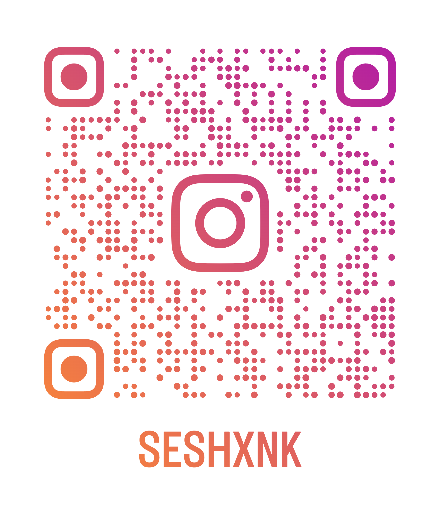
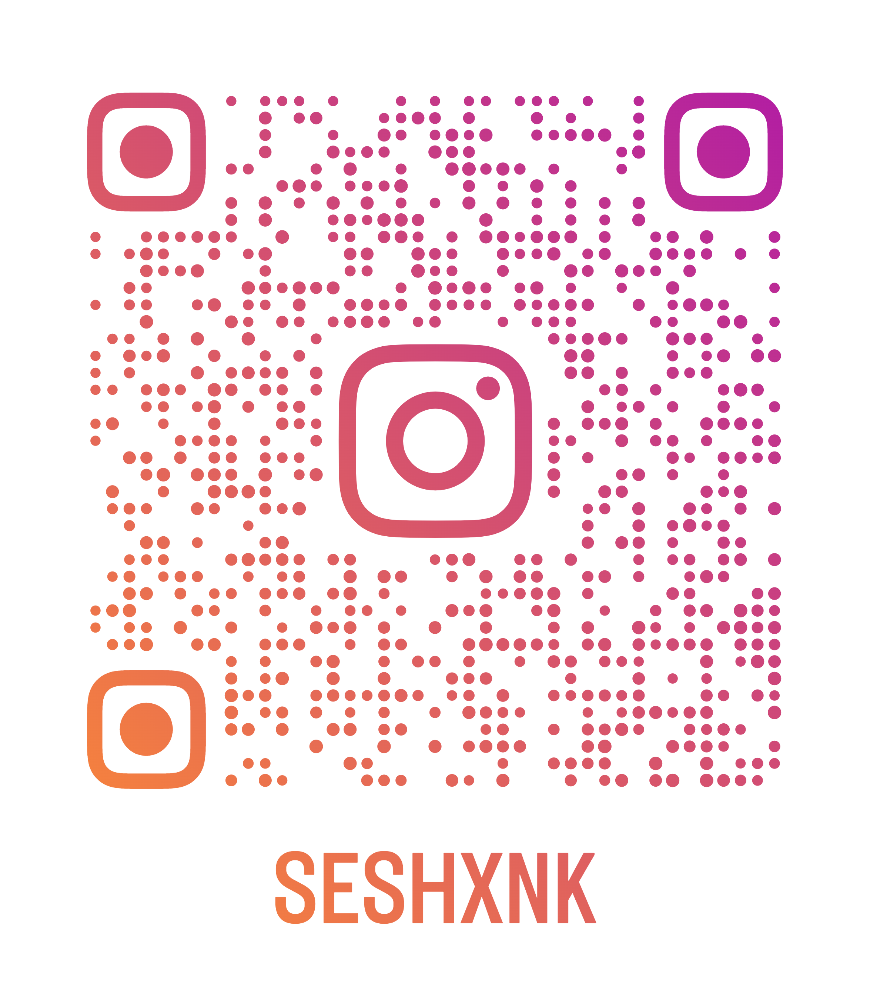

About
Hey there!
I'm Seshank. I’m a 2nd year year student pursuing AI-ML at SRM. Welcome to my college portfolio! This collection of work showcases my academic achievements and personal growth throughout my time in college. Through a variety of projects and experiences, I have gained knowledge and skills in my chosen field of study, as well as in areas beyond the classroom. I am excited to share my journey with you and demonstrate my passion for learning and dedication to success.
I love to travel, explore and share my experiences with people.
Projects
C project
An interactive C program that acts as a Focus To-do app.
1. Set a study duration and the program alerts the user when time is up
2. Make a list of your goals and track them
3. Set reminders
Blogs
Bali tour

Bali,Indonesia is travel heaven for luxury seekers and budget backpackers alike. There’s something for everyone here.
Adventure lovers in Bali will have easy access to waterfalls, jungles, cliffs, volcanoes. It has few smaller but outstanding islands like Nusa Penida, Nusa Lembongan and Nusa Ceningan
which are loaded with adventure.
Or, if you’re the more laid back type, Bali has beaches, temples, and rice terraces for you, along with an endless supply of good restaurants and massages. Bali is known for its alluring arts which includes traditional and modern dance forms, its splendid sculptures, its flashy paintings, excellent leather, beautiful metalworking and amazing music.
You can find peace and serenity in temples like Uluwatu Temple and Ulun Danu Beratan Temple.
Mountains like Mount Agung promises to give a challenging hike and an extraordinary sunrise. Rice terraces like Tegalalang make a perfect scenic view for you to enjoy. Balinese food is distinctive and you should not miss the authentic cuisines Bali has to offer you.
If any of that sounds nice, then you will fall in love with Bali and its people.
Contact
If you would like to contact me,
 : 893-916-8416
: 893-916-8416
 : sv5448@srmist.edu.in
: sv5448@srmist.edu.in
 : 
: 
 : https://github.com/seshxnk
: https://github.com/seshxnk